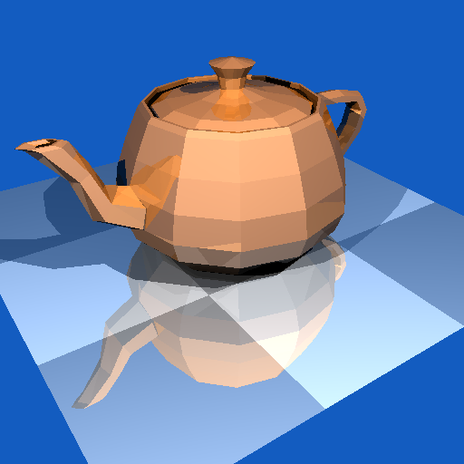
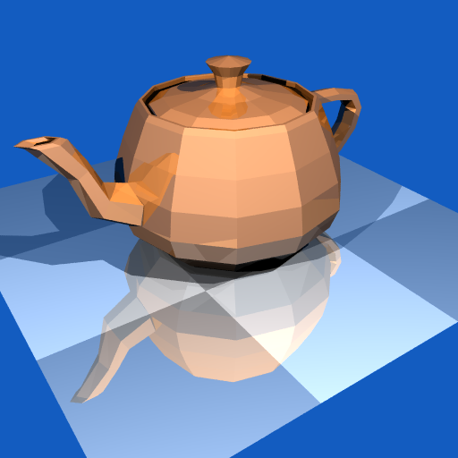
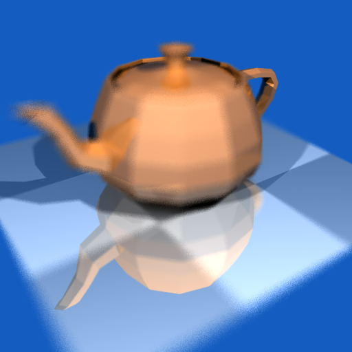
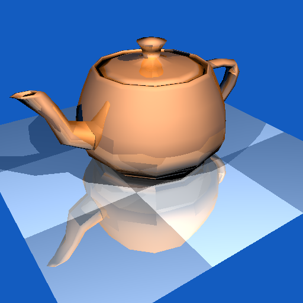

Ray Tracer
Overview

Base output with shading and reflections
I built a ray tracer in C++ that renders triangle-based scenes using intersection with barycentric coordinates. Scenes are described in the Neutral File Format (NFF), a simple text format that defines the camera, background colour, lights, materials and geometry. The program reads an NFF file from the command line, traces one ray through each pixel of the image plane, and writes the result as a PPM image. Rays that hit geometry take the colour of the surface they strike, and rays that miss everything take the scene's background colour.

Stratified sampling (jittering) image.
The shading model combines diffuse and Blinn-Phong specular lighting, with shadow rays cast toward each light source to produce accurate occlusion. Recursive mirror reflection lets surfaces show their surroundings (Figure 1).

Stratified sampling (jittering) with depth of field blurring.
For image quality, I implemented stratified sampling (jittering) to reduce aliasing (Figure 2). Each pixel is divided into a grid of cells, and one randomly offset ray is traced through each cell, which smooths edges more effectively than uniform sampling. I also implemented depth of field by sampling many rays across a lens aperture so that objects at the focal distance stay sharp while nearer and farther objects blur. When both features are enabled, the sampling covers both the image plane and the lens for every ray (Figure 3).

Phong (smooth) shading to give the illusion of a round surface.
I also implemented Phong (smooth) shading. (Figure 4) By default, each triangle has a single flat normal, so a curved surface built from triangles shows visible facets. With smooth shading, the program uses the normals stored at each triangle's vertices. When a ray hits a triangle, the barycentric coordinates of the hit point are used to blend the three vertex normals, and the result is re-normalised to unit length. That interpolated normal then feeds the diffuse, Blinn-Phong specular, shadow and reflection calculations, so lighting changes gradually across each triangle and the facets disappear, even though the geometry is unchanged.